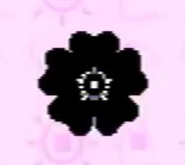

Anna
{kind=link}

{kind=link}
Anna's flower signature from Petscop 24.
Anna Mark is the wife of Marvin, Carrie Mark's mother, and Michael Hammond's aunt. She was first mentioned as Marvin's wife in Petscop 3 and is referred to throughout the series. Her name was revealed in Petscop 17.
Anna is typically represented by blue text. (This is shared with Amber.)
History
Anna is first referenced in the note in Care's room in the Child Library (which is for Marvin), with the note quoting her:
Your wife says, "Care isn't growing eyebrows.".
She is referenced again in the note in Lina's room in the Child Library (which is also for Marvin):
You must have guessed, but I was looking through your things.
I found that picture of you from 1977, standing in front of an old windmill with your friend.
You went there, and it was a bad idea. Your friend and the windmill both disappeared into thin air.
Her sister was holding the camera. She took another picture minutes later: just you, no windmill, and no friend.
You married her sister, and years later, your friend was reborn as your daughter.
Your wife won't admit this is true, but I know it, because I found the evidence.
Your friend never returned with you, and the windmill was gone. I went to see it myself. Where is it? What did you do?
— Rainer, Newmaker
In this note, Anna is suggested to be the sister of Marvin's friend that disappeared.
She also speaks in the house in Petscop 11, talking to someone who has arrived for Christmas:
Where have you been? Why were you gone for such a long time?
"Is this a present? Who is it for?"
Can I use the bathroom?
"Of course."

{kind=link}
The note in the living room
Later, after the house changes to the June 5 variation, there is a note on the wall that can be interacted with:
My husband may come here after 6:00 pm . Please stay overnight if you can .
Thank you so so so much . 🏶
A black rosette symbol appears at the end of the note. Anna was right to assume that someone would come, as later in Care's room, when the clock reaches 6:15 pm, Marvin breaks in and kidnaps Care.
In recordings shown in Petscop 17, in messages addressed to Care, Anna is named for the first time and clearly noted as Care's mother:
You are a girl named Carrie Mark, and you were born on November 12th, 1992.
You have a mommy named Anna, a daddy named Marvin, an auntie named Jill, an uncle named Thomas, a cousin named Daniel, ......
Anna is referenced indirectly in Casket 3's description:
After kicking you out of the house, your wife started painting the walls black, to cover the stencils.
I helped. She made it feel urgent.
That Saturday, busy with work, she pinned a note.
It contained a list of objects.
In Petscop 24, the Book of Baby Names is shown. At the end of the Book of Baby names, a letter from Anna addressed to Michael Hammond for his birthday is shown:
And now a message from Mrs. Mark, who is working very hard as we speak.
Hi Michael! Consider this your BIRTHDAY card! (sorry I can't put money in it...)
When I heard how many kids were coming to your party I was impressed.
Thank your big brother for letting you and your friends play games all day and making you so popular.
Also thank your other Auntie for making this all possible. If you see her, I mean... not everyone can...
But anyway ....HAPPY 7TH! I'm so so so sorry that I couldn't be here. I hope my gift makes up for it... it's the one in the black box...
(CARRIE helped pick it out, thank her!!)
Opening gifts is so fun ....a lot of little mysteries, and all are solved... so "cathartic"
Anyway, I sure hope you have fun!! See you later!
Love you,
Auntie Anna
P.S. Whatever you do, please don't shake the box.
🏶
The same black rosette symbol from before appears at the end of Anna's note. Her full name, Anna Mark, is also revealed by this.
Theories
Anna's maiden name may be Leskowitz, making her related to Lina Leskowitz. This comes from the note in Lina's Child Library room, which describes Lina's disappearance with the windmill, and how later, Marvin married Lina's sister, which would then have to be Anna.
Anna's note may be addressed to a nanny or babysitter for Care.
Due to Jill being Carrie's aunt, Jill could either be another sister of Anna's, or Marvin's sister.
The "New Life Letter" addressed to "Tiara Leskowitz" may be from Anna.
In Anna's note to Mike at the end of the Book of Baby Names, she tells him not to shake the black box. This is speculated to possibly be the dog mentioned in Toneth's description.
| People | Paul · Belle · Carrie · Marvin · Rainer · Anna · Mike · Lina · Jill · Daniel |
|---|---|
| Characters | Guardian · Amber · Pen · Randice · Roneth · Toneth · Wavey · Care · Tiara |